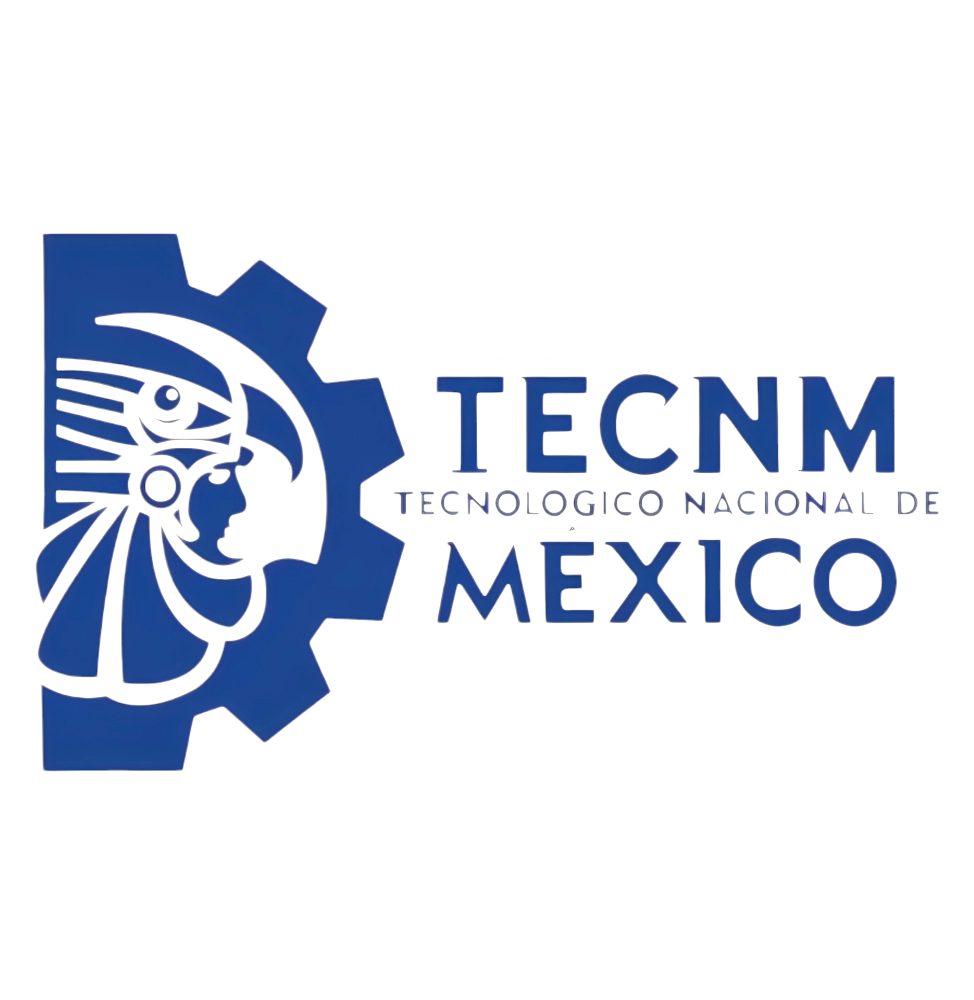
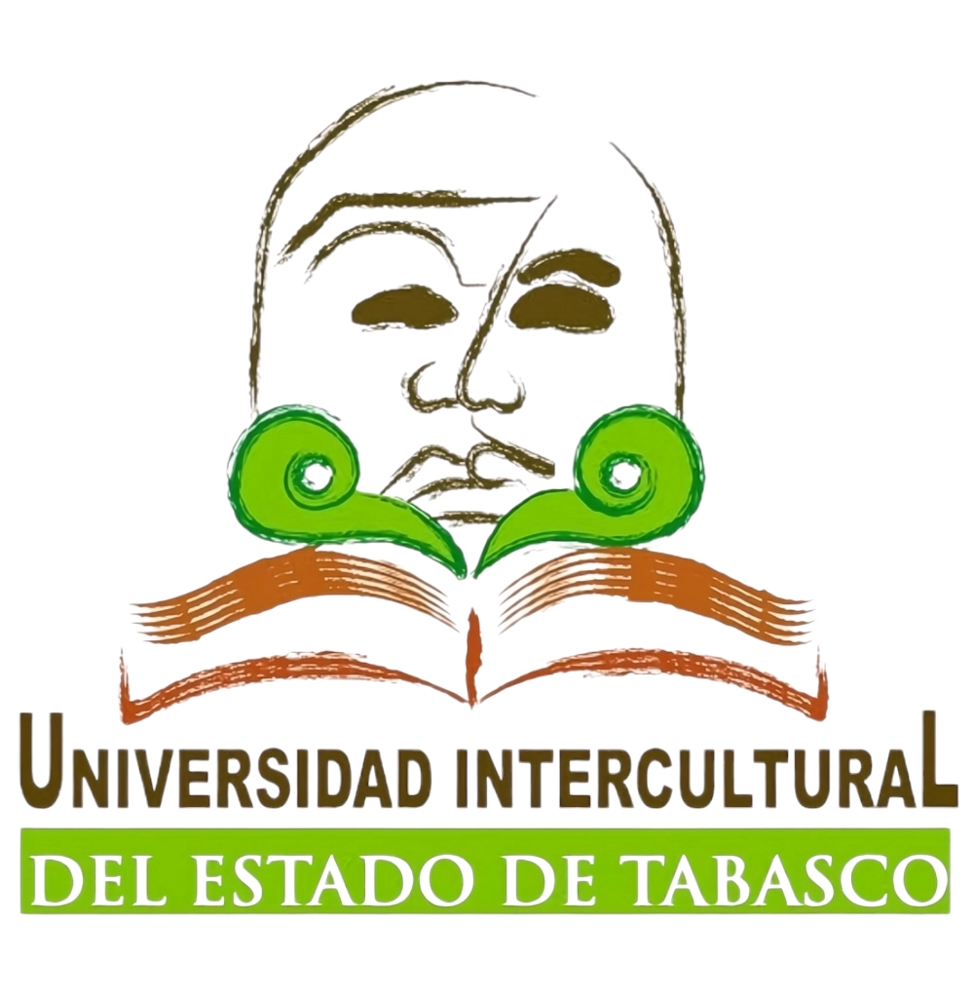
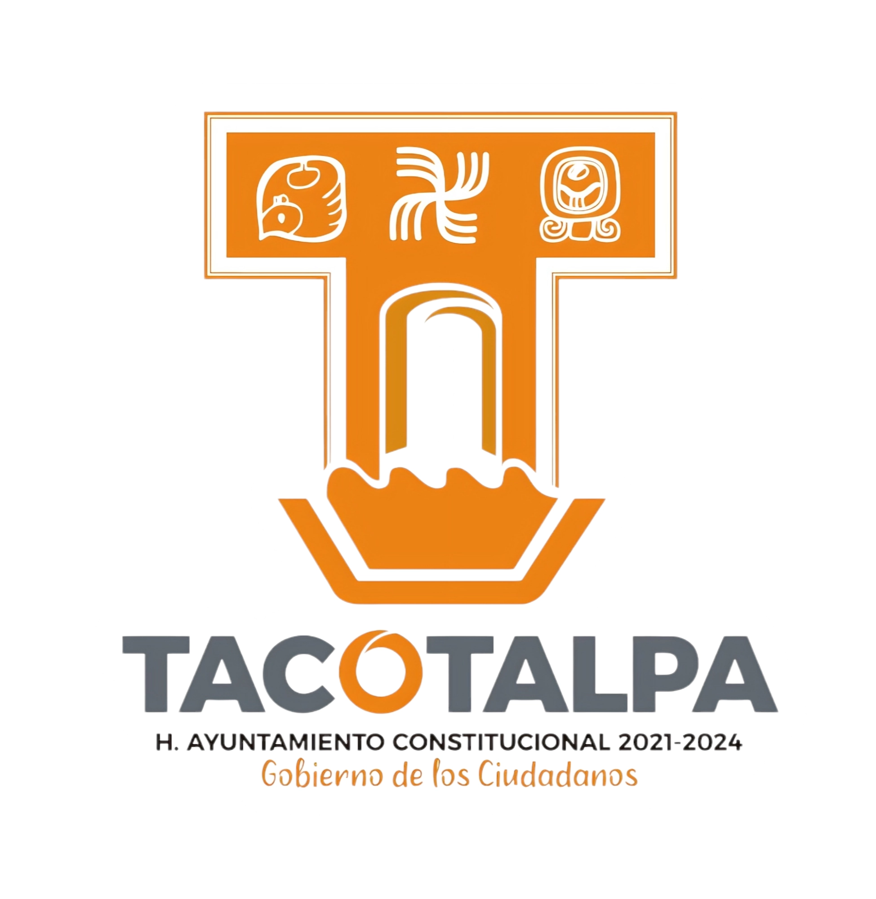
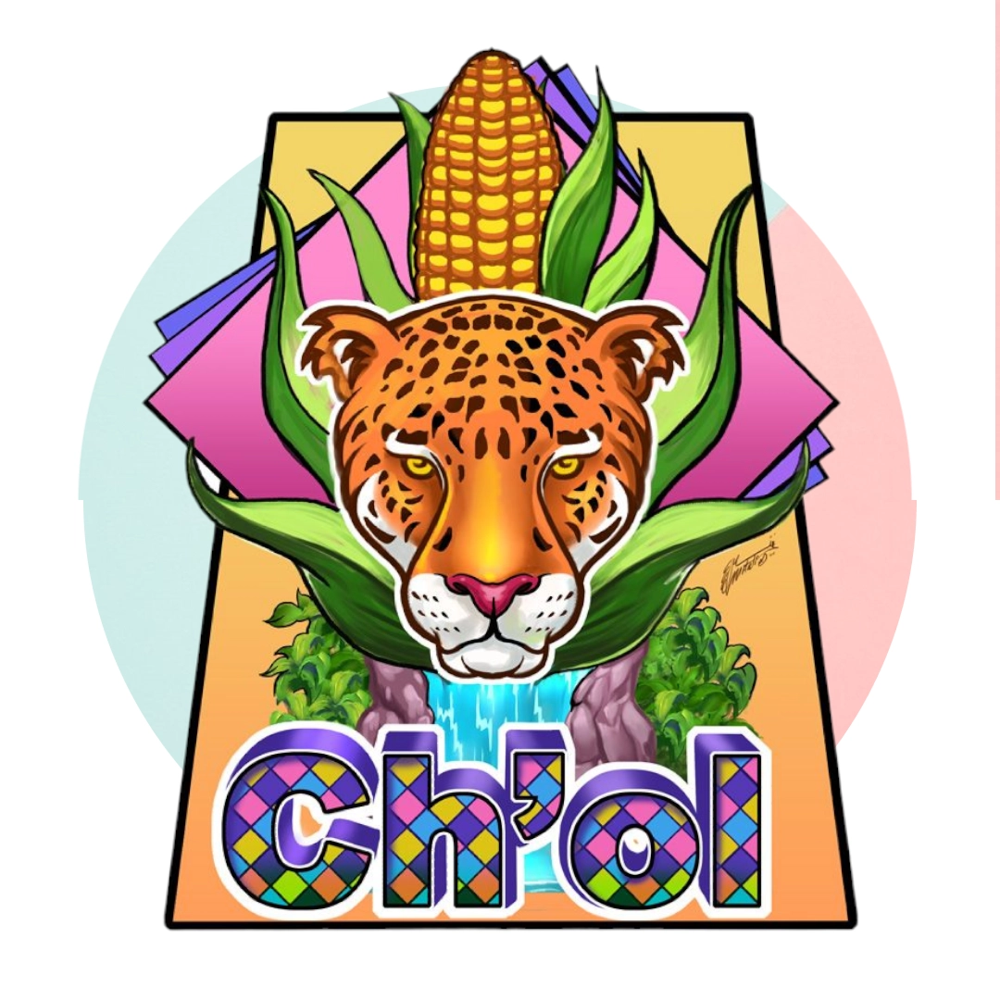
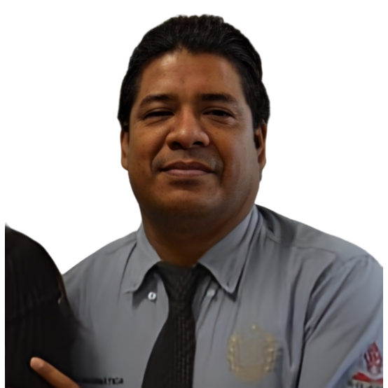
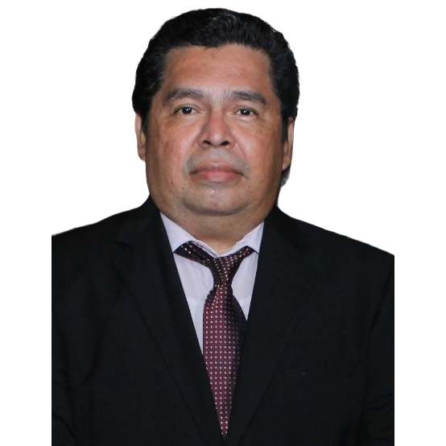

<!DOCTYPE html>
<html lang="en">
  <head>
    <meta charset="UTF-8" />
    <meta name="viewport" content="width=device-width, initial-scale=1.0" />
    <title>Ejemplo de Footer Elegante</title>
    <link rel="stylesheet" href="css/footer.css" />
    <link
      rel="stylesheet"
      href="https://cdnjs.cloudflare.com/ajax/libs/font-awesome/6.4.2/css/all.min.css"
      integrity="sha512-z3gLpd7yknf1YoNbCzqRKc4qyor8gaKU1qmn+CShxbuBusANI9QpRohGBreCFkKxLhei6S9CQXFEbbKuqLg0DA=="
      crossorigin="anonymous"
      referrerpolicy="no-referrer"
    />
  </head>
  <body>
    <footer>
      <h2>Visitas</h2>
      <div id="sfcppfbcnc94trnz296mwgj5esx6x36gahf"></div><script type="text/javascript" src="https://counter7.optistats.ovh/private/counter.js?c=ppfbcnc94trnz296mwgj5esx6x36gahf&down=async" async></script><br><a href="https://www.contadorvisitasgratis.com"></a><noscript><a href="https://www.contadorvisitasgratis.com" title="contador de visitas"></a></noscript>
      <div class="container__footer">
        <div class="box__footer">
          
          <h2>Desarrollador</h2>
          <a
            href="#"
            data-tooltip="Ingeniero informatico, egresado del Instituto Tecnologico Superior de la Region Sierra."
          >
            
            Petronilo Dominguez Dominguez </a
          >
          
          <h2>Diseñador de logo CH'ol</h2>
          <a
            href="https://aladecuervo.com/"
            data-tooltip="Diseñador gráfico especializado en ilustración, edición y foto manipulación de imágenes, fotografía, foto de producto, capacitación y enseñanza para la certificación. Hoy en día colabora con Adobe Latinoamérica impartiendo Webinars relacionados con la edición digital de imágenes, ilustración, tips y trucos para el manejo de sus diferentes programas además de dar  conferencias y talleres en diversas instituciones, universidades y eventos en Latinoamérica."
          >
            
            Martín Mariano Hernández Tena "aka" Ala de Cuervo  QEPD ✞ </a
          >
          <h2>Colaborador de comunidades CH'oles</h2>
          <a href="#">
            Edwin Zaid Cruz Jiménez</a
          >
          
          
           
        </div>
        

        <div class="box__footer">
          <h2>Instituciones Colaboradoras</h2>
          <a href="#">
            Tecnológico Nacional De
            México</a
          >
          <a href="#">
            U. Intercultural Del Estado de
            Tabasco</a
          >
          <a href="#">
            H. Ayuntamiento D.
            Tacotalpa</a
          >
          <h2>Traductores Choles</h2>
          <a
            href="#"
            data-tooltip="
                        Eliseo Martínez Pérez,
                        M. Guadalupe Hrdz Gómez,
                        Rosa Eneyda Gómez Encino,
                        Juan Diego Pérez Martínez,
                        José Raúl Sánchez Pérez,
                        Nayeli Martínez Gutiérrez,
                        Iván Pérez Pérez,
                        Rigoberto Domínguez Rueda,
                        Blanca Adela Cruz Cruz,
                        Lilly Mayte Díaz Sánchez,
                        Heidi Trinidad Ramírez López,
                        Karen Gutiérrez García,
                        José Alberto Aguilar Sánchez,
                        Yanine Nathali Cajas Gómez, 
                        Lucy Cruz Álvarez,
                        César Darinel García Pérez,
                        Verónica Girón Intzin,
                        Leticia Ramírez Diaz,  
                        Javier Hernández Pérez,
                        Karen Jemiah Cruz Hernández,
                        Cori Yarita López López, 
                        Estrella Cruz Álvarez,
                        Nancy Cristhel Sánchez Gtz,
                        Axel Domingo Vázquez Mtnz
                        "
          >
            
            Mostrar todo los traductores </a>
           
        </div>

        <div class="box__footer">
          <h2>Colaboradores</h2>

          <a
            href="#"
            data-tooltip="Docente Investigador pertenece al TecNM Campus de la región Sierra, abarca Matemáticas Discretas, Fundamentos de Sistemas de Información, Arquitectura de Computadoras, Taller de Investigación e Investigación de Operaciones.Posee una sólida base que incluye una Licenciatura en Informática Administrativa, una Maestría en Ingeniería y Desarrollo de Software y un Doctorado en Administración. 
            "
          >
            M.I.D.S Isidro
            Hernandez Castellanos</a
          >

          <a
            href="#"
            data-tooltip="Profesional en ingeniería de software y docencia. Posee una Maestría en Ingeniería y Desarrollo de Software y es Ingeniero en Sistemas Computacionales. Además, tiene experiencia como consultor en análisis, diseño e implantación de sistemas de cómputo y aplicaciones web, Actualmente, es presidente de la Academia de Ingeniería Informática en el TecNM Campus Región Sierra. También ha sido miembro del Comité Técnico de Posgrado e Investigación y asesor de tesis en la Universidad del Valle de Grijalva. 
            "
          >
            M.I.D.S José de Jesús
            Lenin Valencia</a
          >
          <a
            href="#"
            data-tooltip=""
          >
            M.I.D.S Jesús Manuel
            May Leon</a
          >
          <a
            href="#"
            data-tooltip="Herschell J. Serna López, docente con 20 años de experiencia en el Tecnológico Nacional de México, posee una Licenciatura en Informática y una Maestría en Ingeniería en Desarrollo de Software. Su destacado desempeño académico se refleja en su dedicación a la enseñanza. Aspira a obtener un Doctorado en Tecnología Educativa, evidenciando su compromiso con la innovación en la educación. Con habilidades en desarrollo de software"
          >
            M.I.D.S Hershell
            José Serna López</a
          >
          <a
            href="#"
            data-tooltip="Lingüista y docente investigadora en las líneas de lexicografía, historiografía lingüística, análisis crítico del discurso y educación intercultural. Ha escrito distintos artículos de divulgación científica en revistas nacionales y extranjeras, ha impartido distintos talleres sobre metodologías de análisis lingüístico y ha presentado ponencias en diversos eventos académicos en México, Perú y Guatemala. Es miembro del Sistema Estatal de Investigadores de Tabasco y de la Asociación Mexicana de Lingüística de México.Colabora con la Universidad Intercultural del Estado de Tabasco y la Benemérita Universidad Autónoma de Puebla."
          >
            
            D.R.A. Amelia Escobar Potenciano
          </a>
          <a
            href="#"
            data-tooltip="Profesional en Informática Administrativa y una maestría en Administración de Recursos Humanos por la Universidad Juárez Autónoma de Tabasco. Su trayectoria está enriquecida con participación en congresos, cursos y capacitaciones en áreas como educación, informática y gestión de proyectos. En el ámbito profesional, ha sido catedrático en el Instituto Tecnológico de la Región Sierra, y consultor para proyectos gubernamentales, demostrando competencias en educación, desarrollo empresarial y rural."
          >
            M.A Josué Adner Suarez
            Aguilar</a
          >

          <a href="#" data-tooltip="">
            M.A Gladiola arcos Pérez</a
          >
        </div>
      </div>

      <div class="box__copyright pie">
        <hr />
        <p>
          Aplicación de las TIC´ s y objetos de aprendizajes en las
          organizaciones<br />
          Todos los derechos reservados © 2023<br />
          <b>Lakty'añ Tabasco</b>
        </p>
        <br />
      </div>
    </footer>
  </body>
</html>
